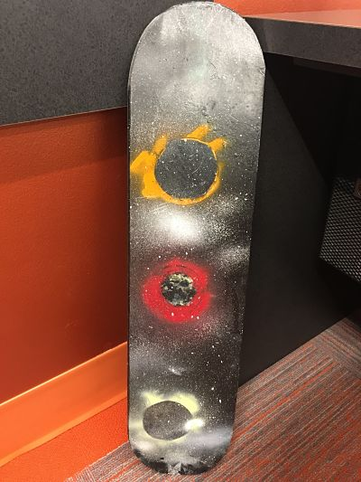

On the 6th rotation, we learnt about lamination, vacuum forming and molding and casting. Lamination is basically a technique that manufactures a product in multiple layers. I applied this porcess to make my own customized skaateboard.
For the first assignment, I made my own skateboard using multiple layers of different kinds of wood, and then I could either make a sticker, spray paint or laser engrave my decoration. The first process is making the skateboard through a process called lamination. I glued multiple layers of different kinds of wood together. the challenge during this phase is to make sure that you aplly the sufficient amount of wood, which I barely managed to overcome./
After all the pieces are